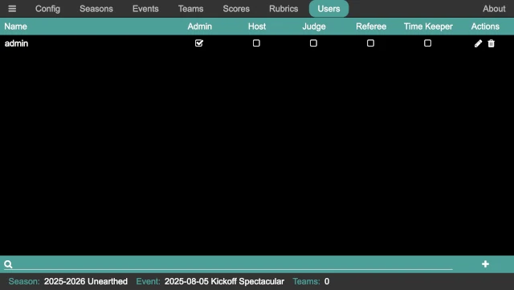
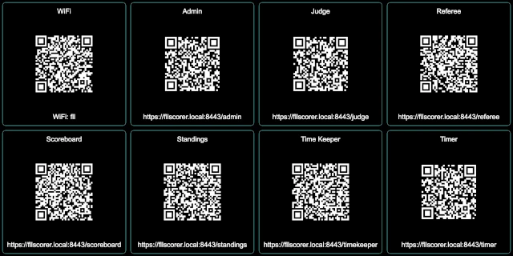
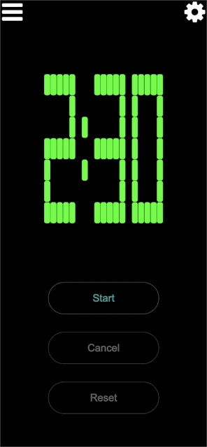
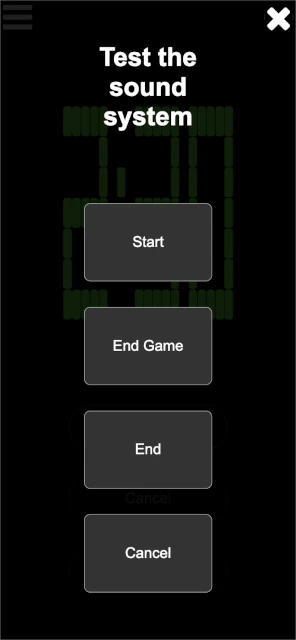
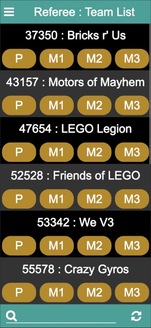
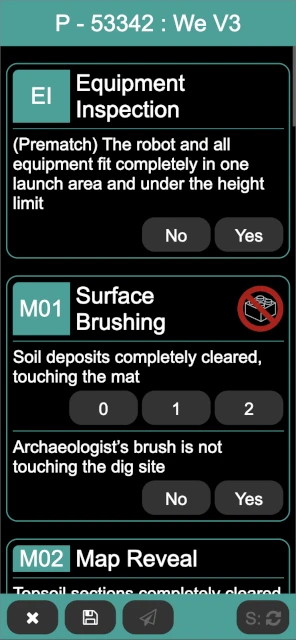

Events with Referees Scoring
By having referees enter scores directly into the scoring system, the need for paper scoresheets is eliminated. This is both good for the environment and eliminates the possibility of running out of paper scoresheets!
FLL Scorer supports running an event with the referees directly entering the scoresheets. This is a more complicated setup, however, as there must be devices for the referees to use (it could be a device supplied by the event, or the referees could use their personal cell phones), and there must be a network setup that allows the scoring devices to access the computer that runs FLL Scorer.
This guide provides the quick step-by-step process of setting up an event to run this way.
Attention
Remember that this depends on the Common Setup.
Since this requires the use of multiple computers/devices, additional steps are needed to ensure that there is a network connection between those devices so that they can communicate; see Networking for details.
Adding Users
Having different users is more important for this type of event. To add a user, click on the Users button at the top of the admin panel:
Then, click on the add user button in the lower right to add a user:

Provide the name for the user and the user’s password. Click on OK to add
the user, initially with no permissions.
Note
If a user forgets their password, the edit button on the right side of the user’s line in the list can be used to edit the user and change their password.
Once the user is added, the required permissions must be provided. For this
style of event, the easiest setup is to add Role-based Logins. Add a
user named referee (using referee as the password, and giving them the
referee permission) and a user named timekeeper (using timekeeper
as the password, and giving them the timekeeper permission). All of the
referees then login with the referee user, and the timekeeper logs in with
the timekeeper user.
Note
The above passwords are suggestions only; any password can be used, just be sure it is not too difficult for the volunteers to enter!
Running the Timer
The timekeeper runs the match timer; there may be a dedicated timekeeper, the announcer may be the timekeeper, and so on. Go to the QR code page:
On the device that is used to start the timer, scan the QR code or enter the
URL under the Time Keeper button to bring up the timer control page (if
computer that runs the FLL Scorer software is used by the timekeeper, simply
clicking on the QR code opens the timer control page locally).
After logging in as the time keeper, the timer control page is displayed:
In this case, the timer control page is shown on a mobile phone. There is only one button enabled at a time, based on the allowable action at any given time. Those actions are:
- Start
This button starts the match timer. Time starts counting down from the match time (2:30 for the official game, though it may be different for alternate games) as soon as this button is pressed, and the start sound is played. All other sounds (30 second warning and end of match) are automatically played at the appropriate times.
- Cancel
During a match, this button cancels the match and stop the timer. This is only used in very extraordinary situations, and hopefully is never used at an event! The timer immediately stops (turning red), and the match canceled sound is played.
- Reset
When a match is over (either because the timer expired or the match was canceled), this button resets the timer, preparing it for the next match. The timer automatically resets 15 seconds after the match ends, so this is only necessary if the timer needs to be reset quicker.
The majority of the time, the timekeeper only uses the Start button at the
start of a match (clicking it when the announcer says “Go” at the end of “3, 2,
1, Go!”, or whatever appropriate point based on how matches are started at the
event).
Testing the Sound System
Clicking on the settings button in the upper left of the timer control page opens the sound system test page:
The four buttons (Start, End Game, End, and Cancel) play the
corresponding sounds. This is helpful to determine that the sound output is
making into the venue’s sound system, and that it is loud enough to be heard by
the participants (both volunteers and teams).
Once done, click on the close button in the upper right to close the sound system test page.
Entering Scores
The table referees enter the scoresheets, going over them with the teams, at the end of each match. Go to the QR code page:
On each of the referee devices, scan the QR code or enter the URL under the
Referee button to bring up the referee page.
After logging in as the referee, the referee page is displayed:
The teams are listed in numberical order, making them easier to find the team. Next to or below each team (depending on the size of the referee’s device, and the screen orientation), there are a set of buttons, one per match that the team is scheduled to run.
The buttons are yellow if there is not a scoresheet or score for the team, red if there is a scoresheet but not a score, and green if there is a scoresheet and a score. If all is going well, the buttons should be yellow or green, and a yellow button should be pressed when a new team comes to the table.
The head referee can also view this page to keep track of the scoring, ensuring that that portion of the event is running smoothly.
Once the team for the current match is found, press the match button that corresponds with the current round:
After making the selections for the missions, click on the Score / S button in the bottom right (the Score button is not enabled until a selection is made for each mission). It either changes from to the match score, or if there are errors in the selections, a popup indicates that there are errors and error text appears below the mission(s) that are invalid. In this case, the match can be re-scored after the errors are corrected.
There are three buttons on the bottom left of the score page:
- Discard /
This closes the scoresheet, discarding changes (if any). If there are changes, a confirmation dialog ensures that the changes should be discarded. If there are no changes, the scoresheet is closed immediately.
- Save /
This saves and then closes the scoresheet; the score is not published to the scoreboard. This is useful if the team and the scoresheet are being passed off to the head referee for discussions, allowing the event to continue. The scoresheet can be saved even if it is not fully filled out.
- Publish /
This saves the scoresheet, publishes the score to the scoreboard, and closes the scoresheet. This button is only enabled when the scoresheet has a valid score (obtained via the Score button).
Once fully entered, the scoresheet should be scored and then published. Repeat for every team at your table throughout the event. Get a friend to help with resetting the table between matches and be sure to eat snacks and drink lots of water!
Exporting the Final Scores
At the end of the robot game matches (and possibly before the end, typically during the third round), the judges need a copy of the robot game scores and ranks. On the scoring computer, click on the Scores button:

The download button in the bottom right corner of the page generates a CSV file with all the teams, their ranks, score, and robot game Core Values scores, and downloads that to the computer. This provides all the information that the judges need; provide this CSV file to them (thumb drive, carrier pigeon, and so on…the details are left as an exercise for the reader!).